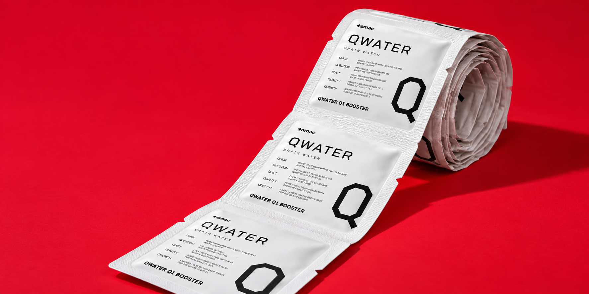
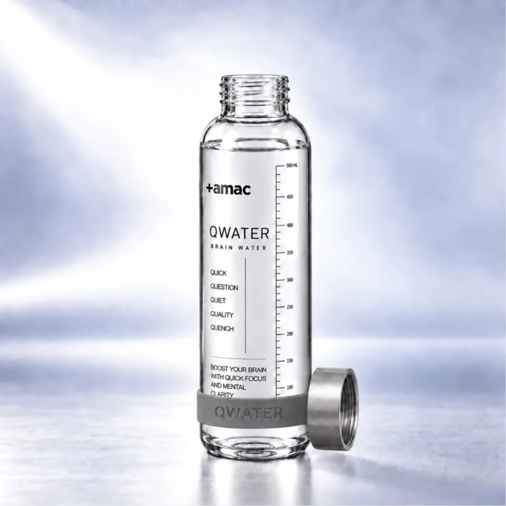
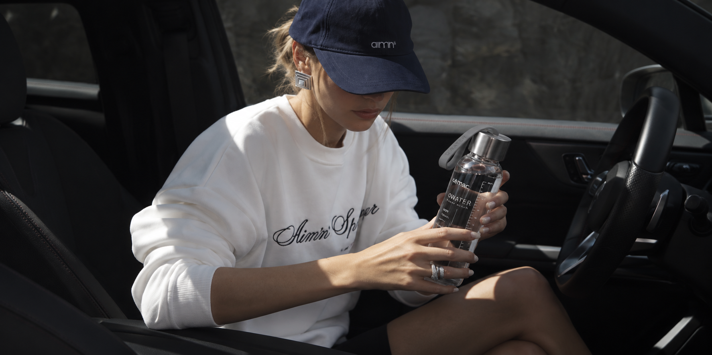
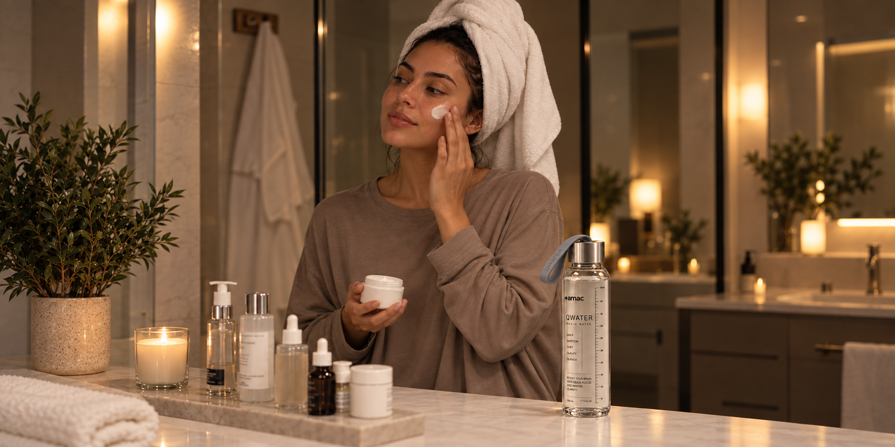
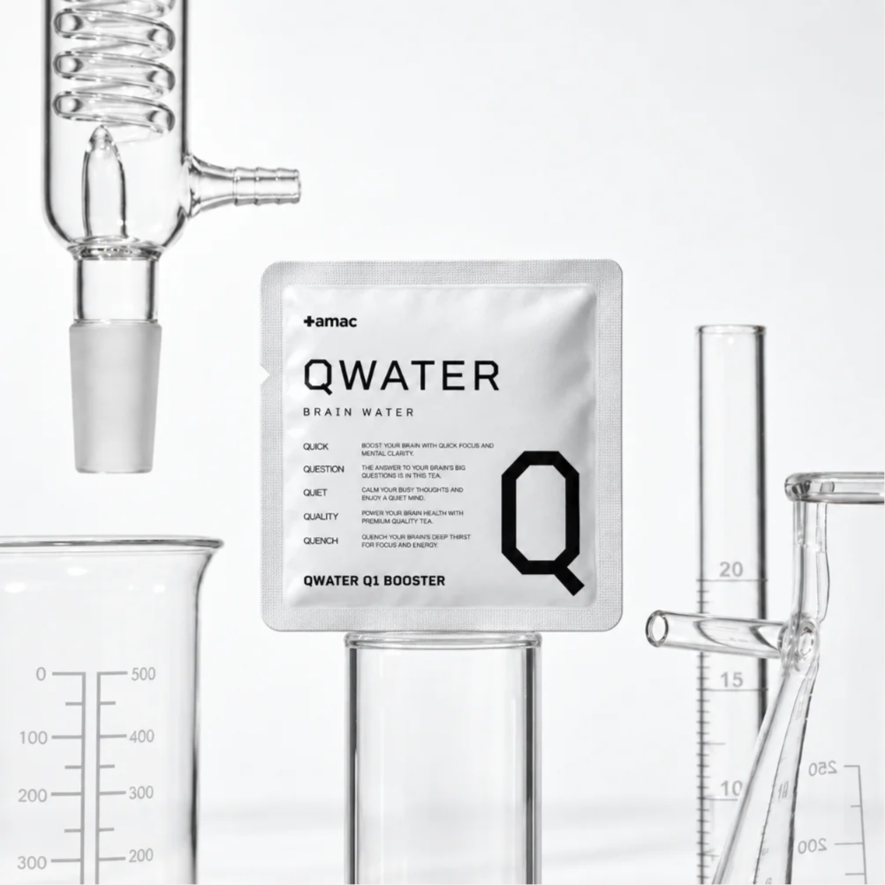
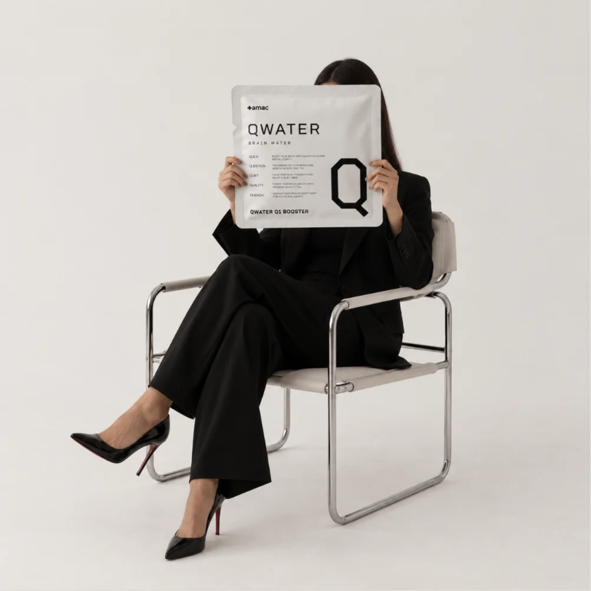
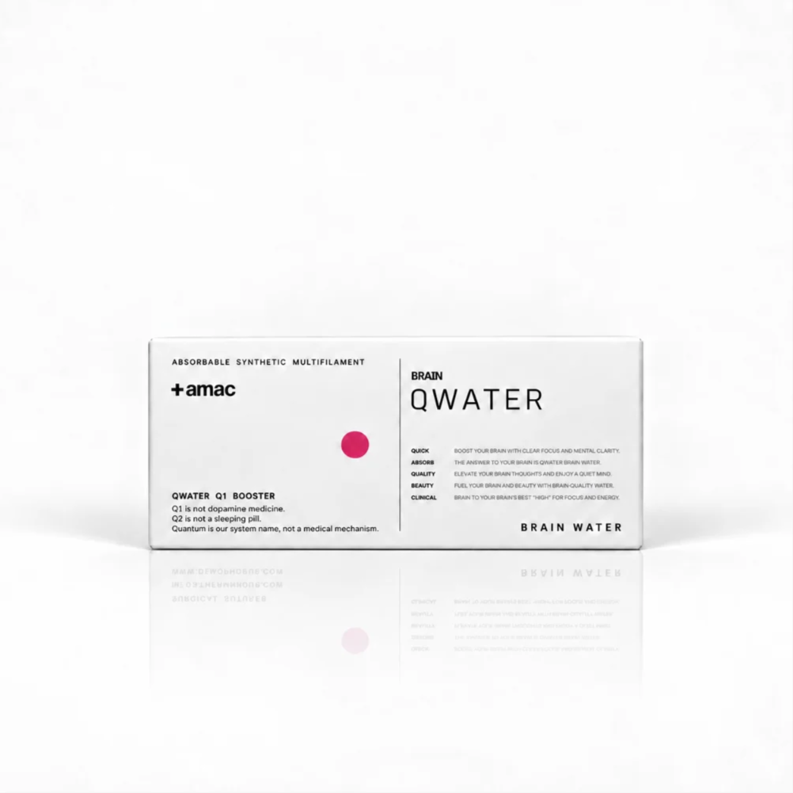
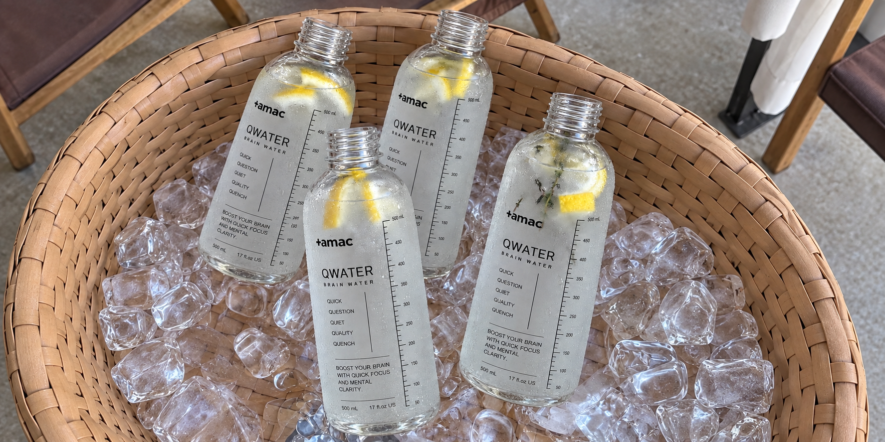

TWO STICKS.
ONE STANDARD.
Q1과 Q2는 목적은 다르지만 기준은 같습니다.
함량을 공개하고, 근거의 수준을 구분하고, 불필요한 과장을 줄입니다.
두 개의 스틱이 하나의 AMAC Standard를 공유합니다.
Q1 and Q2 serve different purposes, but they share the same standard.
Disclose the dosage. Distinguish levels of evidence. Remove unnecessary exaggeration.
Two sticks. One AMAC Standard.

28 DAYS OF
STATE DESIGN.
한 번 마시고 판단하는 제품이 아니라 매일의 행동과 연결되는 시스템을 만듭니다.
Q1과 Q2를 각각 필요한 날과 시간에 기록해 보십시오.
28일 동안 나만의 낮과 밤의 패턴을 발견하는 것이 목표입니다.
This is not about drinking something once and making a judgment.
It is about connecting a system to repeated daily behavior. Track when you use Q1 and Q2.
Over 28 days, begin to recognize your own patterns of day and night.

Q1 ON DESK.
Q2 BY BED.
제품이 놓이는 위치까지 브랜드 경험입니다.
Q1은 업무 공간에, Q2는 저녁 공간에 둡니다.
보기만 해도 다음 행동을 떠올리는 제품이 되게 합니다.
Where the product lives is part of the brand experience.
Keep Q1 in your work space and Q2 in your evening space.
The product itself becomes a visual reminder of what comes next.

THE BOTTLE
BECOMES A SIGNAL.
매일 같은 물병을 사용하는 순간 물병 자체가 루틴의 일부가 됩니다.
Q1을 넣으면 시작, Q2를 넣으면 종료.
AMAC는 제품을 행동의 신호로 만들고자 합니다.
Use the same bottle every day and the bottle itself becomes part of the ritual.
Q1 means begin. Q2 means close.
AMAC is designed to turn the product into a behavioral signal.

Q LOG — YOUR
STATE, RECORDED.
오늘 Q1은 몇 시에 마셨는가.
오늘 Q2 이후 어떤 저녁 루틴을 지켰는가.
느낌을 과장하는 후기보다 자신의 패턴을 기록하는 커뮤니티를 만듭니다.
What time did you drink Q1 today?
What evening routine did you follow after Q2?
Q LOG is designed around observing your own patterns—not exaggerating subjective experiences.

NO
HIDDEN DOSE.
‘Proprietary Blend’ 뒤에 함량을 숨기지 않습니다.
몇 mg이 들어갔는지 소비자가 확인할 수 있어야 합니다.
AMAC 팬덤의 중심은 맹신이 아니라 정보입니다.
We do not hide dosages behind the words “Proprietary Blend.”
Consumers should be able to see how many milligrams are inside.
The center of the AMAC community is not blind belief. It is information.

SCAN
THE LOT.
제품에 인쇄된 QR을 스캔하십시오.
내가 가진 제품 LOT의 주요 지표성분과 품질정보를 확인할 수 있게 만듭니다.
패키지 디자인이 품질관리 시스템으로 연결됩니다.
Scan the QR printed on your product.
Access key marker-compound and quality information for the LOT in your hand.
The package becomes an entry point into the quality-control system.

Q CLUB — PEOPLE
WHO RUN THEIR DAY.
Q CLUB은 제품을 좋아하는 사람만 모이는 곳이 아닙니다.
일할 때 일하고, 멈출 때 멈추는 자기 기준을 가진 사람들이 모이는 곳입니다.
브랜드 팬덤을 제품이 아니라 태도에 연결합니다.
Q CLUB is not simply a group of people who like a product.
It is for people who know when to work and when to stop—and have standards of their own.
The community is built around an attitude, not just an object.

NO CAFFEINE
AT NIGHT.
하나의 제품 안에서 서로 반대 방향의 메시지를 만들지 않습니다.
Q1에는 목적이 명확한 카페인이 있고 Q2에는 없습니다.
두 챕터의 차이가 성분표에서도 분명해야 합니다.
We do not build contradictory messages into the same system.
Q1 contains caffeine for a clearly defined purpose. Q2 does not.
The distinction between the two chapters should be visible in the ingredient list itself.
Q2 IS NOT
A SEDATIVE.
제품의 역할과 의약품의 역할을 의도적으로 구분합니다.
AMAC는 모호한 표현으로 경계를 흐리지 않습니다.
Q2 is not a sleeping pill or sedative.
We deliberately distinguish the role of a consumer wellness product from the role of medicine.
AMAC does not blur that boundary with vague language

WHY WE LEFT OUT
MELATONIN.
2026년 한국에서는 식물성 멜라토닌 제품의 함량과 광고에 대한 소비자 안전 문제가 실제로 제기됐습니다.
AMAC는 유행하는 성분을 따라가기보다 장기적으로 설명할 수 있는 포뮬러를 선택합니다.
없다는 사실까지 제품 설계의 일부입니다.
In Korea in 2026, consumer-safety concerns were raised regarding the content and advertising of plant-derived melatonin products.
AMAC chooses formulas we can explain responsibly over the long term rather than simply following fashionable ingredients.
What we leave out is part of the design.

WHY EHT IS NOT
AT THE CORE.
흥미로운 연구가 있다는 것과 제품 효능이 충분히 입증됐다는 것은 다릅니다.
EHT 관련 2026년 공개 논문에는 동물시험 데이터가 있지만 Q2의 수면·회복 주장을 뒷받침하기에는 아직 부족합니다.
AMAC Q LAB에서 계속 관찰하되 소비자 제품에서는 앞서가지 않습니다.
Interesting research is not the same as sufficient evidence for a product claim.
Published 2026 research involving EHT includes animal data, but that is not enough to establish Q2’s sleep or recovery claims.
AMAC Q LAB will keep watching the science without getting ahead of it.

RICE BRAN ETHANOL
EXTRACT. 1,000 mg.
국내 개별인정형 원료인 미강주정추출물은 일일섭취량 1,000mg에서 ‘수면에 도움을 줄 수 있음’이라는 기능성이 인정되어 있습니다.
Q2의 수면 관련 중심축을 애매한 유행 원료가 아니라 실제 인정원료에 둡니다.
이것이 Q2가 건기식으로 가야 하는 이유입니다.
Rice bran ethanol extract is individually recognized in Korea with functionality stating that it may help support sleep at a daily intake of 1,000 mg.
Q2 places its sleep-related core on a recognized ingredient rather than an ambiguous trend ingredient.
That distinction matters.
L-THEANINE.
200 mg.
테아닌의 국내 인정 기능성은 ‘스트레스로 인한 긴장완화에 도움을 줄 수 있음’입니다.
Q2는 이를 수면제처럼 과장하지 않고 저녁 포뮬러의 또 하나의 기능성 축으로 사용합니다.
정확한 표현이 곧 과학적인 표현입니다.
The recognized functionality of L-theanine in Korea is that it may help reduce tension caused by stress.
Q2 uses it as another functional axis of the evening formula without presenting it as a sleeping drug.
Scientific language begins with accurate language.

MAGNESIUM.
NO EXAGGERATION.
마그네슘은 신경과 근육 기능 유지 등에 필요한 영양성분입니다.
그 사실을 곧바로 ‘잠을 재우는 미네랄’이라는 표현으로 확대하지 않습니다.
Q2는 각각의 원료가 할 수 있는 말만 합니다.
Magnesium is an essential nutrient involved in maintaining normal nerve and muscle function.
We do not automatically turn that fact into a claim that it is a “sleep mineral.”
Q2 only says what each ingredient can legitimately support.

THE LIMITS OF
“SLEEP ELECTROLYTES.”
Q2에는 나트륨·칼륨·마그네슘을 구성할 수 있습니다.
하지만 이 조합 자체를 새로운 수면 과학처럼 설명하지 않습니다.
Sleep Electrolytes는 시스템 이름이지 의학적 메커니즘이 아닙니다.
Q2 can contain sodium, potassium and magnesium.
But we do not present that combination as a newly discovered sleep mechanism.
“Sleep Electrolytes” can be a system name—not a medical mechanism.
THE FORMULA IS BIGGER
THAN ONE INGREDIENT.
소비자는 종종 하나의 유명 성분을 찾습니다.
AMAC는 용량, 조합, 시간, 맛, 용해성, 안정성과 실제 사용 습관까지 함께 봅니다.
Formula는 원료 목록이 아니라 전체 설계입니다.
Consumers often search for one famous ingredient.
AMAC looks at dosage, combination, timing, taste, solubility, stability and how the product is actually used.
A formula is not an ingredient list. It is a complete design.

EVIDENCE
BEFORE HYPE.
새로운 성분이라는 이유만으로 사용하지 않습니다.
논문이 있다는 이유만으로 모든 효능을 인정하지도 않습니다.
AMAC는 근거가 광고보다 먼저 도착한 성분을 선택합니다.
We do not use an ingredient simply because it is new.
And the existence of a paper does not automatically prove every claimed benefit.
AMAC chooses ingredients when the evidence arrives before the hype.
REORDER
THE RITUAL.
재구매의 이유가 재고가 떨어졌기 때문만이어서는 안 됩니다.
Q1과 Q2가 이미 자신의 하루 속 특정 위치를 차지하게 만드는 것이 중요합니다.
사람은 제품보다 익숙해진 루틴을 다시 주문합니다.
Reordering should mean more than simply running out.
Q1 and Q2 should already occupy a clear place in your day.
People do not only reorder products. They reorder rituals that have become familiar.

SOLUBILITY IS PART
OF THE SCIENCE.
좋은 원료도 물에 제대로 섞이지 않으면 매일 사용하기 어렵습니다.
QWATER는 성분뿐 아니라 용해 속도와 침전, 실제 음용감까지 함께 확인합니다.
포뮬러는 마시는 순간까지 완성되어야 합니다.
Even good ingredients are difficult to use daily if they do not dissolve properly.
QWATER considers dissolution, sedimentation and the actual drinking experience.
A formula is not complete until the moment you drink it.

THE DOSE MATTERS
MORE THAN THE NAME.
유명한 성분을 넣었다는 사실만으로는 충분하지 않습니다.
중요한 것은 실제로 얼마가 들어 있으며, 그 양을 어떤 근거로 결정했는가입니다.
QWATER는 이름보다 함량을 먼저 설명합니다.
Including a well-known ingredient is not enough.
What matters is how much is actually included—and what evidence informed that amount.
QWATER explains the dose before promoting the name.

MORE INGREDIENTS DO
NOT GUARANTEE SYNERGY.
성분이 많다는 이유만으로 더 정교한 포뮬러가 되는 것은 아닙니다.
AMAC는 각 원료의 역할과 중복, 섭취 시점과 전체 균형을 함께 검토합니다.
좋은 설계는 더하는 것만큼 덜어내는 판단이 중요합니다.
More ingredients do not automatically create a more sophisticated formula.
AMAC considers each ingredient’s role, overlap, timing and overall balance.
Good formulation requires knowing what to remove as well as what to add.
STABILITY MATTERS
OVER TIME.
제품은 제조된 순간뿐 아니라 보관되는 시간 동안에도 기준을 유지해야 합니다.
AMAC는 맛과 색, 용해성 그리고 주요 성분의 안정성을 지속해서 확인합니다.
과학은 처음의 완성도가 아니라 끝까지 유지되는 품질입니다.
A product should maintain its standard beyond the day it is made.
AMAC monitors taste, color, solubility and the stability of key ingredients over time.
Science is not only how a formula begins, but how well it holds.

DRINK
YOUR STATE.
하루를 완벽하게 통제할 수는 없습니다.
하지만 다음에 어떤 상태로 이동할 것인지는 의식적으로 선택할 수 있습니다.
AMAC QWATER. Q1으로 시작하고. Q2로 마무리하십시오.
You cannot control every part of your day.
But you can make a deliberate choice about the state you move into next.
AMAC QWATER. Q1 TO BEGIN. Q2 TO CLOSE.